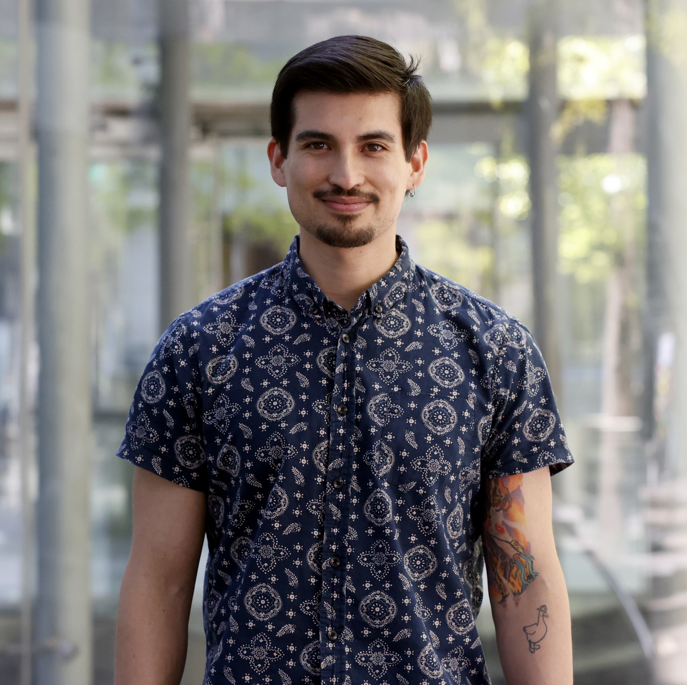

1st NORA Workshop at NeurIPS'25, December 1st, 2025
Agents have experienced significant growth in recent years, largely due to the rapid technological advancements of Large Language Models (LLMs). Although these agents benefit from LLMs’ advanced generation proficiency, they still suffer from catastrophic forgetting and a limited context window size compared to the agents’ needs in terms of contextual information. Knowledge Graphs (KGs) are a powerful paradigm for structuring and managing connected pieces of information while unlocking deeper insights than traditional methods. Their value is immense for tasks that require context, integration, inter-linking, and reasoning. However, this power comes at the cost of significant upfront and ongoing investment in construction, curation, and specialised expertise. The NORA workshop aims at analysing and discussing emerging and novel practices, ongoing research efforts and validated or deployed innovative solutions that showcase the growing synergy between LLMs agents and KGs.
The recent proliferation of large language models (LLMs) has opened the doors for new paradigms that benefit many applications like intelligent assistants, content creation & summarisation, code generation & debugging, and knowledge discovery, to name a few. Such applications are achieved through prompt engineering & in-context learning, retrieval augmented generation, fine-tuning & alignment, and function calling & tool usage. These families of techniques can be used on their own or combined for better results.
Thanks to the constantly improving reasoning and function calling capabilities of LLMs, LLM-based agents have attracted more attention. While performing their allocated tasks, these agents usually need to accumulate memory and feedbacks from tool calls and maintain a long run of these tasks. Consequently, they can easily exceed the context window size, explode costs, and degrade both latency and performance, due to their growing usage of tokens.
Depending on their tasks, agents usually need access to minimal portions of semantic memory (i.e. facts), episodic memory (i.e. events), and procedural memory (i.e. instructions). However, it remains challenging for agents to select relevant examples from different memories, especially in large-scale applications (e.g., personal memories for personal assistance).
Knowledge Graphs (KGs) model data and knowledge in a structured and explicit format known as graphs. Thanks to this native structure, they have demonstrated great capabilities in capturing rich semantics and connections between entities and concepts in both closed and open domains. This feature has enabled both 1) complex logical reasoning, which is needed for multi-hop queries and deriving new implicit knowledge from explicit facts; and 2) graph-based learning through richer features of the structured data. However, curating knowledge can be challenging, especially from heterogeneous data sources and formats (e.g., personal assistants). As a consequence, large-scale and industrial applications' scenarios are even more impacted by this bottleneck, which thereby lower the adoption of pure KG-based solutions in some Industrial use-cases.
Therefore, this first edition of the workshop aims to unveil the emerging yet growing interplay between two key paradigms of recent AI systems: Agents and Knowledge Graphs. On the one hand, the efficiency and performance of agentic systems can benefit greatly from KGs as a structured data model and reasoning foundation, especially in designing and implementing their various memories. On the other hand, KGs can leverage the advanced linguistic capabilities of LLM agents in extracting, computing and engineering knowledge from unstructured, multi-modal & multi-lingual data sources.
In addition to the poster session and presentation of accepted submissions, the workshop will feature some keynote talks and a panel discussion.
We invite submissions in this non-exhaustive list of topics of interest, including, but not limited to:
We welcome submissions and participations from intradisciplinary, interdisciplinary and multidisciplinary researchers and industry & public sector practitioners in the areas of Knowledge Graphs, Knowledge Engineering and Reasoning, Advanced NLP, GenAI, and Agents. We will especially welcome contributions that provide theoretical insights, propose new approaches, or introduce new grounded solutions in real-world applications such as enterprise, smart assistance & chat, healthcare, tourism, finance, etc.
We also encourage submissions at different levels of achievement and different publication statuses: from preliminary work-in-progress, to work under review, to already accepted contributions for publication in other venues.
We envision two types of submissions covering the entire workshop topics spectrum (page limits do not include references and appendices):
Some papers will be chosen as "spotlight" for oral presentations, while the remaining ones will be presented in an elaborate poster session at the workshop. If possible, we envision to have formal proceedings through CEUR-WS.
[Track Name] Article Title".
All papers should be submitted through OpenReview.
Note: Please be aware of OpenReview's moderation policy when creating new profiles without an institutional email.
October 30th, 2025
Please refer to NeurIPS 2025 Poster Instructions for all details about poster presentaions.
In a nutshell:

Agentic AI systems promise autonomy, adaptivity, and natural interfaces, but they struggle with grounding, memory, and maintaining an evolving understanding of the world. In this talk, I argue that structured knowledge (particularly in the form of knowledge graphs) provides the scaffolding agents need to operate reliably at scale. Leveraging more than two decades of progress in querying, reasoning, and knowledge engineering, we already have powerful tools that complement modern LLMs rather than compete with them.
I will illustrate this through GraphRAG and examples from large-scale multimodal and socio-political KGs. Through these case studies, I will highlight both the possibilities and the engineering challenges ahead: scalable graph and vector systems, evaluation of grounded agents, multimodal schema design, and agent architectures that can read, write, and evolve structured knowledge.
Sebastián Ferrada is an Assistant Professor at the Data & Artificial Intelligence Initiative of Universidad de Chile. His research focuses on how Knowledge Graphs can enhance retrieval, reasoning, and decision-making AI systems. He participates in projects on graph data management and graph-based RAG pipelines, including MillenniumDB (a native graph database supporting efficient evaluation of combined graph pattern and vector-similarity search for graph-RAG), ChatSP (an agent that allows teachers to interact with Chile’s public math textbooks), and, with IMFD Chile, an agent-based simulator for modeling public perception of political candidates. He created IMGpedia, one of the first large-scale multimedia knowledge graphs, and his work has received multiple awards, including Best Paper at CoopIS 2023 and Best Student Paper at ISWC 2017.
This talk presents recent advances for extracting Knowledge Graphs from text using two core NLP tasks: Named Entity Recognition and Relation Extraction, with a special focus on Arabic. I will highlight state-of-the-art tools and datasets, and demonstrate how these components work together in practical extraction pipelines. In the second part, I introduce an Information Extraction Ontology designed to unify outputs from multiple systems and ensure semantic consistency, including schema.org and Wikidata. Finally, I show how this ontology can be embedded directly into AI prompts, enabling portable and more efficient Knowledge Graph construction within large language model workflows.
Mustafa Jarrar is a Professor of artificial intelligence and the director of SinaLab for Computational Linguistics and Artificial Intelligence at Hamad Bin Khalifa University and Birzeit University. Jarrar has won several prestigious awards including, the Shoman Arab Researchers Award in Technology, Mohammed Bin Rashid Award for the Arabic Language, and Google Faculty Research Award. He has published 100+ articles in the areas of Natural Language Processing, Ontology Engineering, Semantic Web, and Graph Databases. Jarrar has also chaired 40 international conferences, a PC member of 200+ journals and conferences, a coordinator/manager of 30+ large international projects, a full member of the IFIP2.6 on Database Semantics, the IFIP2.12 on Web Semantics, and the UN ESCWA Technology Centre Board of Governors, among others. Prof. Jarrar is also the founder of both Sina Institute for Knowledge Engineering and Language Technologies, and the Palestinian e-Government Academy, and advisor of ministry of Telecom & IT, where he also developed and chaired the Palestinian e-Government Interoperability Framework.
Modern AI systems excel at learning patterns from existing data, but high-stakes scientific domains face a deeper limitation where the most critical data does not yet exist. Rare biological events, tail-risk financial scenarios, and cascading supply chain failures cannot be recovered through retrieval or scaled by scraping. We need models that learn not only from observation but from explicit causal structure and structured simulation.
In this talk, I will introduce the concept of Agentic Simulators. These are systems where agents operate inside Knowledge Graphs (KGs) that encode the constraints of a domain. Agents propose interventions and experiments, then call mechanistic and Large Quantitative Models (LQMs) as causal simulation engines to generate counterfactual trajectories. The resulting synthetic outcomes, along with their causal assumptions and provenance, are written back into the KG. This transforms the KG from a static memory into a computable causal world model.
I will outline design patterns for building such systems, drawing on examples from patient modeling and agentic chemistry workflows. Finally, I will argue that Simulation Augmented and Causally Grounded Reasoning over KGs offers a principled path beyond today’s Retrieval Augmented Generation. This shift enables AI systems to reason about rare events, latent mechanisms, and the unmeasured world.
Tiffany Callahan, PhD, is a Staff Machine Learning Research Scientist and Technical Lead at SandboxAQ, where she architects next generation agentic AI systems and leads the development of causal, mechanistic virtual cell models. Her work integrates symbolic reasoning, machine learning, and physics inspired modeling to build scalable systems for scientific discovery, drug development, and regulatory decision support. Tiffany has more than a decade of cross sector experience spanning biomedical informatics, materials science, clinical data science, and knowledge engineering. Before joining SandboxAQ, Tiffany was a Postdoctoral Research Scientist at IBM Research, where she helped build foundation models for cellular engineering and materials science and developed multimodal, multi-agent systems for scientific reasoning. Prior to IBM, she completed a fellowship in the Department of Biomedical Informatics at Columbia University, developing causal machine learning methods for adverse drug reactions. Across her career, Tiffany has authored or co authored more than 50 peer reviewed publications, contributed to widely used community resources including the Human Phenotype Ontology, and led or co led international collaborations in translational medicine, ontology engineering, and large scale patient modeling. She is also an active contributor to the broader research community, creating open source algorithms and resources now used in large National Institutes of Health collaborations such as the NCATS N3C and the NIH Common Fund Human BioMolecular Atlas Program.
Program is subject to change. Times are in UTC-6
| Time | Event |
| 09:00 - 9:15 | Opening Remarks |
| 09:15 - 10:00 | Keynote Talk "Memory, Meaning, and Machines: Building the Knowledge Scaffolds of Agentic AI" by Sebastián Ferrada |
| 10:00 - 10:45 | Poster Session & Coffee Break |
| 10:45 - 10:55 | Spotlight Talk: "Are Hypervectors Enough? Single-Call LLM Reasoning over Knowledge Graphs" by Yezi Liu, William Youngwoo Chung, Hanning Chen, Calvin Yeung and Mohsen Imani |
| 10:55 - 11:05 | Spotlight Talk: "Beyond Magic Words: Sharpness-Aware Prompt Evolving for Robust Large Language Models with TARE" by Guancheng Wan, Lucheng Fu and Mengting Li |
| 11:05 - 11:15 | Spotlight Talk: "Validation-Gated Hebbian Learning for Adaptive Agent Memory" by Pragya Singh and Stanley Yu |
| 11:15 - 12:00 | Keynote Talk "Advances in Information Extraction and Knowledge Graphs" by Mustafa Jarrar |
| 12:00 - 13:00 | Poster Session & Lunch Break |
| 13:00 - 13:45 | Keynote Talk "Simulators for the Unmeasured World" by Tiffany Callahan |
| 13:45 - 13:55 | Spotlight Talk: "Diagnose, Localize, Align: A Full-Stack Framework for Reliable LLM Multi-Agent Systems under Instruction Conflicts" by Guancheng Wan, Leixin Sun and Mengting Li |
| 13:55 - 14:05 | Spotlight Talk: "GAP: Graph-based Agent Planning with Parallel Tool Use and Reinforcement Learning" by Jiaqi Wu, Qinlao Zhao, Zefeng Chen, Kai Qin, Yifei Zhao, Xueqian Wang and Yuhang Yao |
| 14:05 - 14:15 | Spotlight Talk: "MFCL Vision: Benchmarking Tool Use in Multimodal Large Language Models for Visual Reasoning Tasks" by Huanzhi Mao, Jad Bendarkawi, Evan Maxwell Turner, Ritesh Sunil Chavan and Kevin Zhu |
| 14:15 - 15:00 | Panel Discussion |
| 15:00 - 15:05 | Closing Remarks |
| 15:00 - 15:45 | Poster Session & Coffee Break |
Mounir Ghogho (University Mohammed VI Polytechnic), Daniel Bauer (Columbia University), Shihao Ran (University of Houston), Aldrian Obaja Muis (Singapore Polytechnic), Sherrie Shen (University of Edinburgh), Leslie Barrett (Bloomberg, LP), Tianxing Wu (Southeast University), Mihaela Bornea (IBM, International Business Machines), Mark Steedman (University of Edinburgh), Daniel Varab (German Research Center for AI), Abhay Dutt Paroha (SLB), Yin Zhang (Research, Google), Yubo Chen (Zhongguancun Laboratory), Guimin Hu (University of Copenhagen), Sudarshan Rangarajan (International Business Machines), Yingya Li (Harvard University), Kemal Kurniawan (University of Melbourne), Zhengzhe Yang (Google), Simona Frenda (Heriot-Watt University), Duygu Altinok (Independent Researcher), Hyun-Je Song (Chonbuk National University), Chong Li (Institute of automation, Chinese Academy of Sciences), Marek Kubis (Adam Mickiewicz University of Poznan), Deven Santosh Shah (Microsoft), Manali Sharma (Samsung Semiconductor), Masaaki Tsuchida (Tokyo University of Science), Yinghui Li (Tsinghua University, Tsinghua University), Lei ZHANG (Meta), Sachin Agarwal (Apple), Xiliang Zhu (Dialpad Inc.), Emir Munoz (Genesys Cloud Services Inc.), Xu Jinan (Beijing Jiaotong University), Ankur Padia (Philips Research North America), Arun LN (University of Pittsburgh), Oleg Okun (Writer and translator), Shamil Chollampatt (Zoom Video Communications), Andrei Kucharavy (University of Applied Sciences Western Switzerland, Sierre (HES-SO Valais)), Ali Pesaranghader (LG Electronics), Manabu Torii (Kaiser Permanente), Matīss Rikters (National Institute of Advanced Industrial Science and Technology (AIST)), Anup Kalia (Millenium), Xuemei Tang (Hong Kong Polytechnic University), Jiahe Huang (University of California, San Diego), Sallam Abualhaija (University of Luxemburg), Vinod Goje (IEEE), Ningyu Zhang (Zhejiang University), Tianhao Shen (Tianjin University), Sourav Dutta (Huawei Research Center), Mukul Singh (Microsoft), Elnaz Nouri (Research, Microsoft), Giuliano Tortoreto (University of Trento), Veronica Liesaputra (University of Otago), John Hudzina (Thomson Reuters), Won Ik Cho (Samsung Advanced Institute of Technology), Dong Zhou (Guangdong University of Foreign Studies), Lorenzo Malandri (University of Milan - Bicocca), Yihao Fang (Huawei Technologies Ltd.), Sachin Pawar (Tata Consultancy Services Limited, India), Marcin Namysl (Ringler Informatik AG), Quentin Brabant (Orange-labs), Traian Rebedea (NVIDIA), Pierre-Henri Paris (Université Paris-Saclay), Ethan Selfridge (LivePerson), Yuhang Yao (Carnegie Mellon University), Ankani Chattoraj (NVIDIA), Derrick Higgins (Illinois Institute of Technology), Pengyu Hong (Brandeis University), Srijani Mukherjee (Texas A&M University - College Station), Shubhashis Sengupta (Accenture), Liang Ma (Thomson Reuters), Srideepika Jayaraman (IBM TJ Watson Research Center), Chun-Nam Yu (Nokia Bell Labs), Sidharth Mudgal (Google), Tianlin Zhang (University of Chinese Academy of Sciences), Long Qin (Alibaba Group), Yonghao Liu (Jilin University), Daryna Dementieva (Technische Universität München), Jiaying Gong (eBay Inc.), Lucas Pavanelli (aiXplain), Natalia Loukachevitch (Lomonosov Moscow State University), Issei Yoshida (Hosei University), Stefano Pacifico (Jozef Stefan Institute ), Rahul Divekar (Bentley University), Marek Suppa (Comenius University in Bratislava), Tong Guo (Meituan), Debmalya Biswas (UBS Group AG), Pradyot Prakash (Meta), Ana Kotarcic (University of Zurich), Yixin Ji (Soochow University), Souvik Das (J.P. Morgan Chase), Prajit Dhar (Universität Potsdam), Ankit Arun (Facebook), Hideya Mino (NHK), Vaishali Mishra (Expedia Group), Giorgos Stoilos (Huawei Technologies Ltd.), Sashank Santhanam (Apple), Mahdi Zakizadeh (State University of New York at Stony Brook), Nadjet Bouayad-Agha (Independent Researcher), Ryan Wang (University of Illinois Urbana-Champaign), Arpit Sharma (Walmart Inc.), Alexandra Lavrentovich (University of Florida), Aashka Trivedi (International Business Machines), Lawrence Moss (Indiana University at Bloomington), Keyi Li (Rutgers University), Weixu Zhang (McGill University), Sucheta Ghosh (Heidelberg University, Ruprecht-Karls-Universität Heidelberg), Jinyeong Yim (University of Michigan), Kushagr Arora (Bloomberg), Ahmed Abdelali (Humain), Yuwei Yin (University of British Columbia), Daniel Dickinson (American Family Insurance), Deborah Dahl (LF AI & Data Foundation), Zhixin Ma (Singapore Management University), Diane Napolitano (The Washington Post), Keith Trnka (Independent Research), Rajasekar Krishnamurthy (Adobe Systems), Hanna Abi Akl (INRIA), Tracy King (Adobe Systems), Hemant Misra (Simpl), Anmol Goel (Technische Universität Darmstadt), Naoki Otani (Megagon Labs), Mithun Balakrishna (Morgan Stanley), Shailza Jolly (Amazon Alexa AI ), Wang Xu (Tsinghua University), Brian Ulicny (RTX BBN Technologies), Zihao Wang (TSY Capital), Fuxiang Chen (University of Leicester), Jinseok Nam (Amazon), Xueting Pan (Oracle), Minoru Sasaki (Ibaraki University), Baban Gain (Indian Institute of Technology, Patna), Elio Querze (Bose Corporation), Mohammad Yeghaneh Abkenar (Universität Potsdam), Xiaolei Lu (University of California, San Diego), Sarasi Lalithsena (Wright State University), Young-Suk Lee (IBM, International Business Machines), Kaige Xie (Georgia Institute of Technology), Carlos Bobed Lisbona (University of Zaragoza), Yuanliang Meng (Tsinghua University, Tsinghua University), Georgios Alexandridis (University of Athens), Juanyong Duan (Microsoft), Yifan Deng (University of the Chinese Academy of Sciences), Ian Stewart (Pacific Northwest National Laboratory), Cheng Yu (Technische Universität München), Vera Pavlova (burevestnik.ai), Brian Riordan (Cisco), Ye Liu (Tencent AI Lab), Gilbert Lim (EyRIS), Katya Artemova (Toloka AI), Runze Wang (alibaba), Hai Wang (Amazon), Voula Giouli (Aristotle University of Thessaloniki), Diman Ghazi (Google), Bonaventura Coppola (SAP Security Research), Munira Syed (The Procter & Gamble Company ), Yuxia Wu (Singapore Management University), Cheoneum Park (Hanbat National University), Wei Hu (Nanjing University), Maeda Hanafi (International Business Machines), David Elson (Google / Google DeepMind), Matthew Dunn (New York University), Baohang Zhou (Tiangong University), Matthew Mulholland (Lattice), Lori Moon (MoonWorks, Inc.), Yekun Chai (Baidu), Yuwei Bao (Microsoft), Abdulaziz Alhamadani (Florida Polytechnic University), Fabio Casati (ServiceNow Inc), Ashish Shenoy (Meta), Zhuoxuan Jiang (Shanghai Business School), Long Bai (Institute of Computing Technology, Chinese Academy of Sciences), Rafael Anchiêta (Federal Institute of Maranhão), Xuan Zhu (University of California, Berkeley), Zac Yu (Duolingo), ASWARTH ABHILASH DARA (School of Computer Science, Carnegie Mellon University), Wolfgang Maier (Mercedes Benz Research & Development), Mahnoosh Mehrabani (Interactions Corp.), Jiangning Chen (Cisco), Sanjeev Kumar (Quark Inc), Yuqicheng Zhu (Universität Stuttgart), Tanay Kumar Saha (Purdue University), Emmanuel Ngue Um (University of Yaoundé 1), Alsu Sagirova (DeepPavlov), Yifan Zhou (Shanghai Jiao Tong University), Jiyue Jiang (The Chinese University of Hong Kong), Bin Dong (Ricoh Software Research Center Beijing Co., Ltd. ), Lisheng Fu (Meta), Xin Ying Qiu (Guangdong University of Foreign Studies), Wenjie Zhou (Baidu), Mohsen Mesgar (Bosch)
October 30th, 2025
NORA 2025 is co-located with NeurIPS 2025 Mexico City Satellite Event.
Hilton Mexico City Reforma, Mexico City, Mexico
Room: Don Alberto 4
If you have any questions or would like additional information, please feel free to reach out to us via: nora-workshop@googlegroups.com
We're looking for sponsorship partners and would love to explore how we can work together. If you're interested, get in touch with us to start the conversation.